The shape of the trip
A night bus up from Hanoi, three days riding the loop on our own bikes, a bus back down, and a working Monday by the airport before the evening flight home.
The route
Coloured lines are the three days on the bikes, blue dashes are the buses (Hanoi is off the bottom of the map: zoom out to see it). Tap a number for details.
Where we sleep 1 Stop on the way 7 Optional
- Bus Thu night · Nội Bài airport → Hà Giang262 km · 6-7 h
- Bike Fri · Hà Giang → Đồng Văn145 km · about 4.5 h riding
- Bike Sat · Đồng Văn → Mèo Vạc → Du Già93 km · about 4 h riding
- Bike Sun · Du Già → Hà Giang68 km · about 3 h riding
- Bus Sun afternoon · Hà Giang → Nội Bài airport263 km · about 6 h
Everything is organised by us, not a tour company: bikes from one shop in Hà Giang, buses from Bằng Phấn, and homestays booked on Booking.com or Agoda.
On Monday only one of us works, from the hotel by Nội Bài airport. Late check-out, then the Scoot flight at about 19:50.
Day 1 · Thursday 26 November
Land in Hanoi, night bus north
- Fly Singapore to Hanoi, landing in the evening.
- Bằng Phấn picks us up at Nội Bài airport.
- Bus Cabin sleeper at about 21:00-22:00 to Hà Giang: 262 km, 6-7 h.
Sleep: on the bus
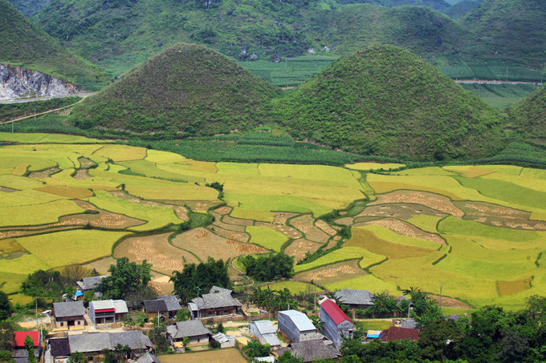
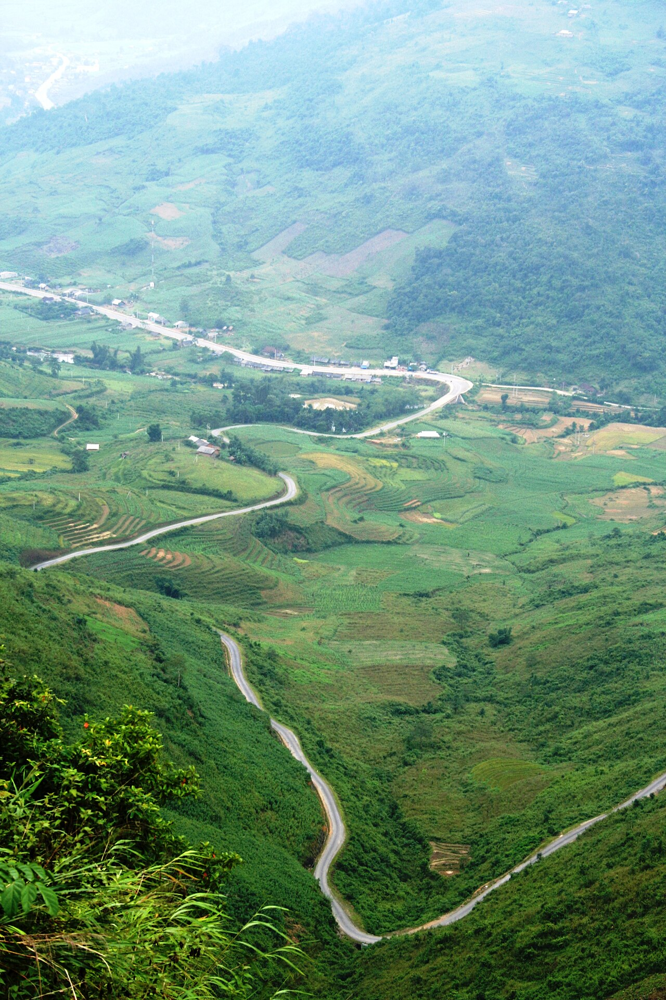
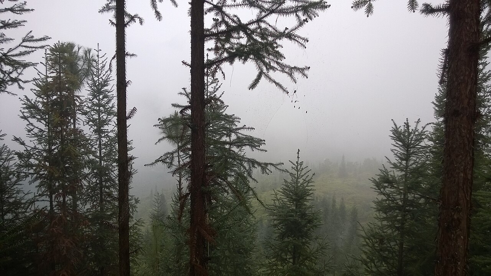
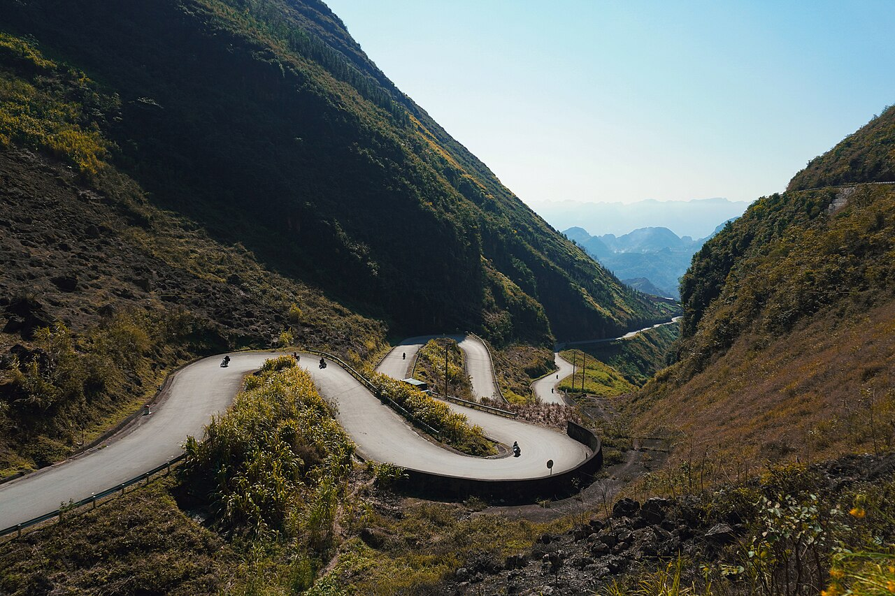
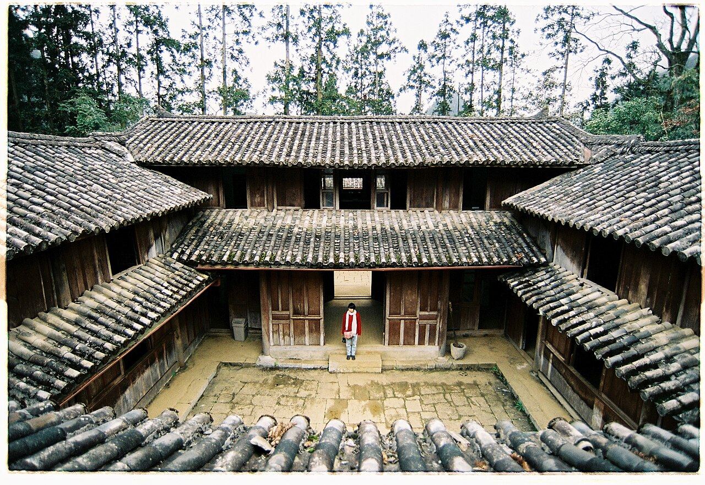
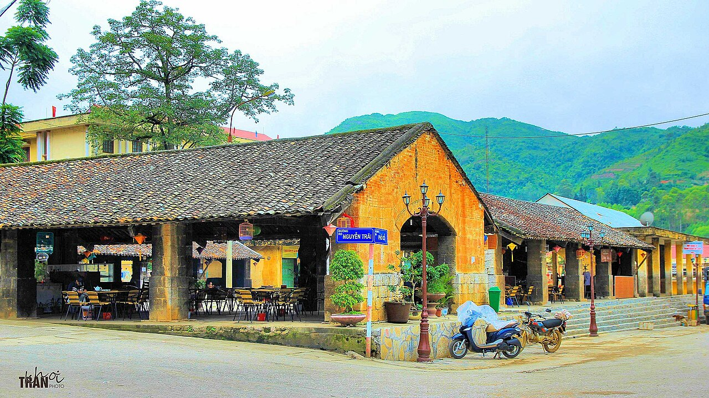
Day 2 · Friday 27 November
Pick up the bikes, ride to Đồng Văn
- Arrive in Hà Giang at about 04:00-05:00. Rest and breakfast.
- Pick up the bikes.
- Bike Hà Giang → Quản Bạ Heaven Gate and the Twin Mountains: 45 km, about 1.5 h.
- Bike Quản Bạ → Yên Minh, through the pine forest, lunch: 52 km, about 1.5 h.
- Bike Yên Minh → Thẩm Mã Pass → Vương Palace (the H'mong king's house): 34 km, about 1 h.
- Bike Vương Palace → Đồng Văn: 14 km, about 30 min.
Riding today: 145 km, about 4.5 h on the bike, plus stops. A full day.
Sleep: Đồng Văn
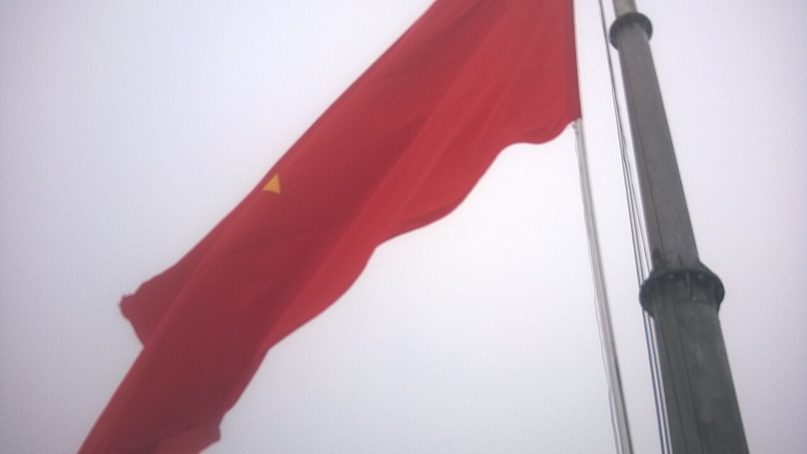
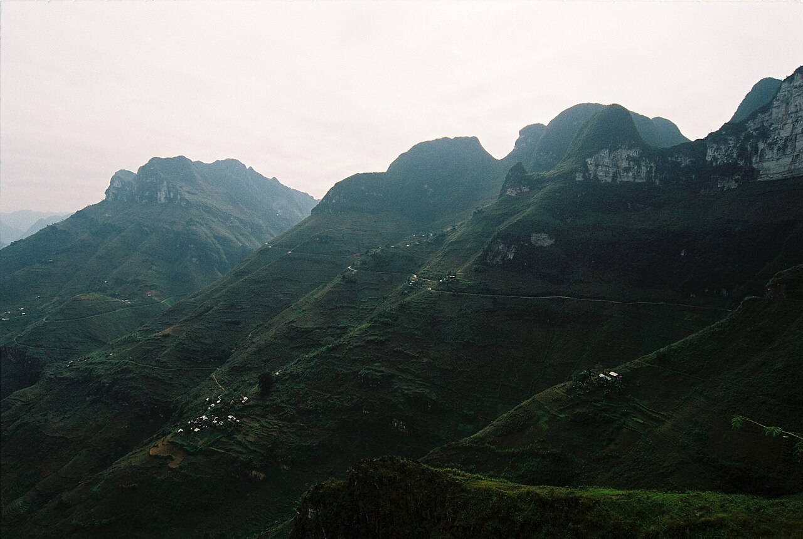
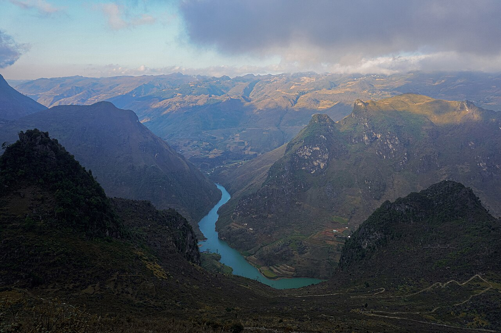
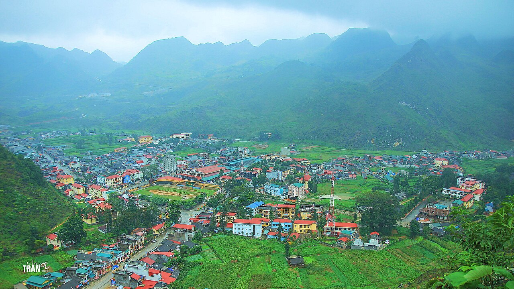
Day 3 · Saturday 28 November
Mã Pí Lèng Pass and the Nho Quế river
- Bike Optional, early: Đồng Văn → Lũng Cú flag, at the northern tip of Vietnam, and back: 50 km, about 1.5 h.
- Bike Đồng Văn → Mã Pí Lèng Pass, early for the best light: 11 km, about 30 min.
- Boat Ride down to the Nho Quế river and take the boat through the Tu Sản canyon: about 2 h in total.
- Bike Mã Pí Lèng → Mèo Vạc, lunch and coffee at Voi Hostel: 11 km, about 30 min.
- Bike Mèo Vạc → Du Già: 71 km, about 3 h. Rough road, arrive before dark.
Riding today: 93 km, about 4 h on the bike (5.5 h with Lũng Cú), plus the boat.
Sleep: Du Già
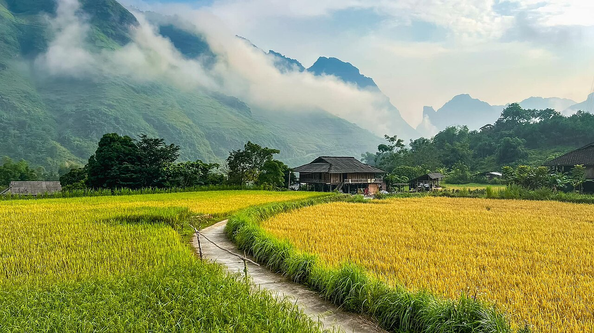
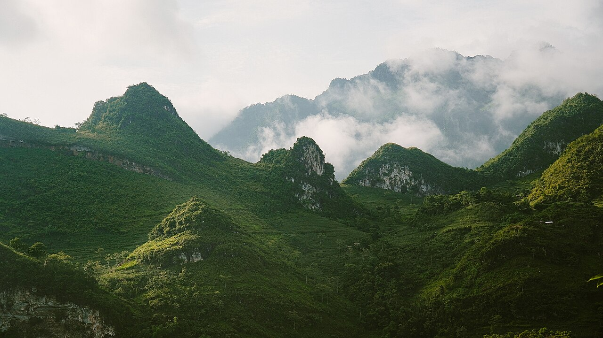
Day 4 · Sunday 29 November
Waterfall, back to Hà Giang, bus down
- Du Già waterfall, early.
- Bike Du Già → Hà Giang: 68 km, about 3 h.
- Return the bikes at about 12:30.
- Bus Bằng Phấn limousine at about 13:00-14:00 to Nội Bài airport: 263 km, about 6 h.
- Taxi Airport → Noi Bai Boutique Hotel: about 7 min.
Riding today: 68 km, about 3 h. Then about 6 h on the bus.
Sleep: Noi Bai Boutique Hotel
Day 5 · Monday 30 November
Work day, evening flight home
- Work from the hotel desk, 08:00-16:00 Hanoi time (09:00-17:00 Singapore time).
- Late check-out at about 17:00.
- Shuttle Hotel → Nội Bài airport: about 7 min.
- Scoot flight at about 19:50, landing in Singapore just after midnight.
Sleep: home
Bằng Phấn cabin sleeper
Night bus from Nội Bài airport to Hà Giang, 6-7 h. A small private cabin with a flat bed.
Đồng Văn homestay
Our saved place in Đồng Văn (name still to confirm). Dinner ordered in advance.
Local Homestay Du Già
In the Du Già valley. Dinner ordered in advance.
Noi Bai Boutique Hotel
4 stars, about 7 minutes from Nội Bài airport. Desk in the room, Wi-Fi rated 9.5/10 on Booking.com. Late check-out to about 17:00.
| What | Details | SGD |
|---|
All figures are estimates, rounded. Prices in Vietnam converted at about 20,000 VND = 1 SGD. Flights are not booked yet, so their prices will change.
- Flight Singapore to Hanoi, Thursday 26 NovemberLand by about 20:00 so we can catch the night bus.
- Scoot flight Hanoi to Singapore, Monday 30 November, about 19:50Cheaper than the Singapore Airlines one at 18:25.
- Noi Bai Boutique Hotel, Sunday 29 NovemberTwin room, late check-out to 17:00.
- Đồng Văn homestay, Friday 27 NovemberTwin room, pre-order dinner.
- Local Homestay Du Già, Saturday 28 NovemberTwin room, pre-order dinner.
- Bằng Phấn busesThursday night cabin sleeper from Nội Bài airport to Hà Giang. Sunday afternoon limousine from Hà Giang to Nội Bài airport. Book on Baolau.com or Vexere.
- Two bikes, Friday to SundayHonda Future 125cc from QT Motorbikes. Ask if a French licence is enough.
Vietnam only accepts an International Driving Permit (IDP) from the 1968 Vienna Convention, with motorbike category A. IDPs from the 1949 convention are not valid.
Your IDP
You already have one. Check that it's the 1968 type and shows category A.
My French licence
French licence only. France issues 1968 IDPs. If my licence has category A, apply now: it can be slow from abroad.
If we ride without a valid IDP
- Fine of about 2-4 million VND (SGD 100-200) for bikes up to 125cc.
- Fine of 6-8 million VND and the bike may be taken for anything bigger.
- Travel insurance will probably not pay if there's an accident.
That's why we stick to bikes of 125cc or less.